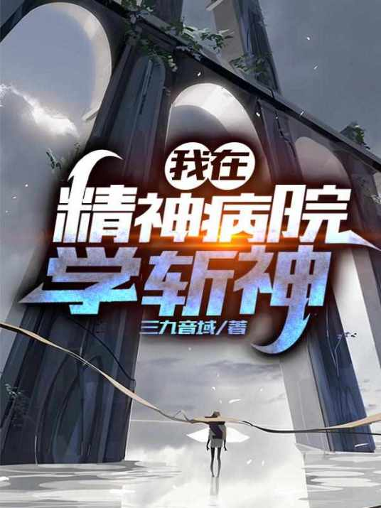

📖《我在精神病院里学斩神》是一部都市玄幻题材的超长篇网络小说。故事融合了中国神话、西方神话与克苏鲁元素，构建了一个宏大而独特的世界观。
看过的第一本超长网文，看了动画后开始追书，从头到尾都非常棒，算是佳作。也算是龙傲天系列，但主角是经过历练的，不是开局就无敌。
时间空间文，衔接非常好，把中国神话、西方神话、以及假想的克苏鲁元素全部融合到一个世界观里。这很难，但作者做到了，而且融合得相当自然。作为一部超长篇网文，能保持从头到尾的高质量已经很难得——很多同类作品写到后期就崩了，但这部书有始有终，主角的成长有血有肉，是真正的历练与蜕变。如果你喜欢都市玄幻，这部不可错过。